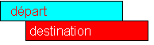

variable_réceptrice = expression
Variable_réceptrice peut être une portion de variable avec les fonctions mid left et right. Exemple : left(art,10) = nom
Il est possible d'affecter tous les types entre eux, le type de la variable à gauche du signe = déterminant le type de l'affectation.
Voir également les Opérateurs d'affectation qui permettent de combiner une opération arithmétique avec l'affectation.
Transfert alphanumérique
La donnée transférée est cadrée à gauche dans la variable réceptrice avec troncature ou remplissage à droite avec des espaces.
Le fait de mettre à espace une donnée structurée ne contenant pas de variables de type X ou binaire équivaut à mettre à espace les données de type alpha-numérique et de mettre à zéro les variables de type numérique. Les variables numériques contiennent alors des espaces mais leur valeur est nulle.
Exemples :
nom = "DUPONT"
display [ nom '/' ]
affichera DUPONT / si nom a une longueur de 10
affichera DUP/ si nom a une longueur de 3
Transfert numérique
|
|
[ A ] |
|
|
variable_réceptrice = expression |
[ T ] |
[étiquette_ovf] |
|
|
[ S ] |
|
A indique que le résultat doit être arrondi (par défaut)
T indique que le résultat doit être tronqué
S indique que le résultat doit être arrondi à la valeur supérieure
Les indicateurs A T et S sont prioritaire par rapport au mode par défaut défini par Round et Truncate.
Il y a branchement à l'étiquette étiquette_ovf s'il y a dépassement de capacité. L'instruction SharpOnOverflow indique que la variable réceptrice doit être garnie de "#" en cas de débordement de capacité.
Si l'étiquette de débordement est fournie, elle doit obligatoirement être précédée de l'indicateur d'arrondi.
Voir
Round, Truncate, SharpOnOverflow
Affectation avec chevauchement
Dans la quasi-totalité des cas, l'affectation se fait "naturellement" de gauche à droite. Le premier octet de la zone départ est copié dans le premier octet de la zone destination, puis le deuxième et ainsi de suite.
Si les zones départ et destination se chevauchent, quelles sont de même taille, et que l'adresse de la zone destination est supérieure à l'adresse de la zone départ , l'affectation se fait alors de la droite vers la gauche.
Le schéma suivant permet de visualiser ce cas :

Exemple 1 : Insertion d'un caractère dans une chaîne.
Soit la déclaration suivante :
1 c 10
La variable c contient la chaine "0123456789".
Nous voulons insérer la lettre A à l'emplacement du chiffre 3. Il faut donc décaler les caractères de c à partir du chiffre 3.
Du fait que l'affectation gère les zones chevauchées, nous pouvons tout simplement écrire :
mid(c,5,6) = mid(c,4,6)
mid(c,4,1) = 'A'
La variable c contient maintenant : 012A345678
Si l'affectation s'était faite de gauche à droite, nous aurions obtenu : 012A333333
Exemple 2 : Insertion d'une case dans un tableau
Nous pouvons transposer l'exemple précédent pour écrire une procédure permettant d'insérer une case dans un tableau, sans programmer de boucle.
La procédure InsertTab reçoit deux paramètres : le tableau et l'indice de la case où doit se faire l'insertion.
procedure InsertTab(&tab,num)
1 tab A*1
1 num N
1 l X
beginp
if num >= index(tab(),1)
preturn
endif
; l = taille a décaler
; l = (indice_max - indice) * taille_un_élément
l = (index(tab(),1) - num) * size(tab())
; insertion
mid(tab(num+1),1,l) = mid(tab(num),1,l)
tab(num) = " "
endp
1 tab 2*20
main
tab= "aabbccddeeffgghhiijjkkllmmnnooppqqrrsstt"
InsertTab(tab(),5);
display tab
ProgramExit
Ce programme affiche : aabbccdd eeffgghhiijjkkllmmnnooppqqrrss
Par cette méthode, l'insertion d'une case dans un tableau de 6000 cases est quasi-instantanée.